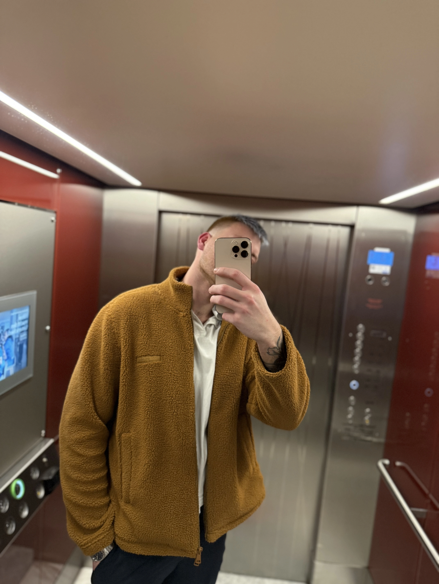
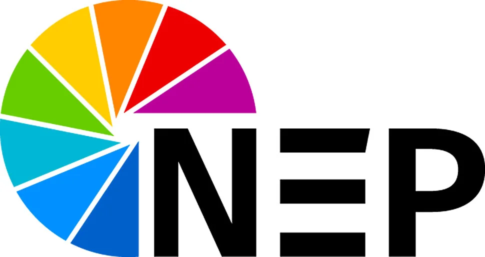
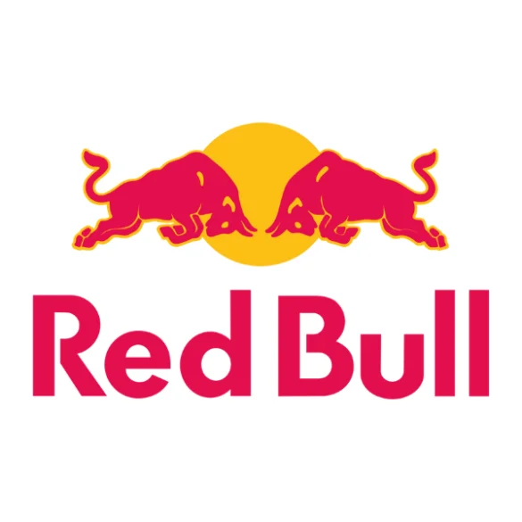
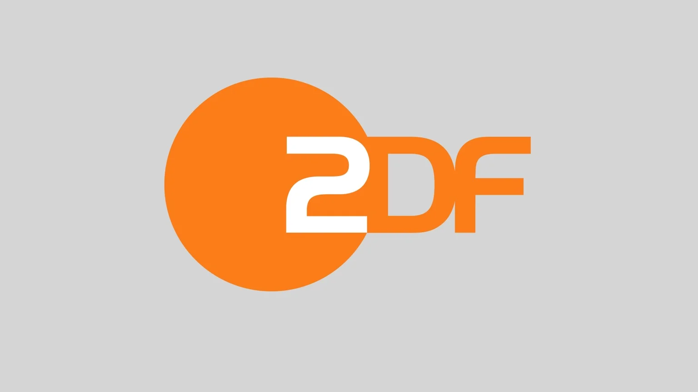

EVS Replay Operation
Highlight-Clips, Slomos, schnelle Wiederholungen und sichere Abläufe für Live-Sport und Event-Regien.

Lukas PasserFreelance Broadcast Specialist
EVS Replay Operator, Director und Grafikoperator für Live-Sport, Entertainment und hochwertige Event-Produktionen.
Über mich
Ich unterstütze Produktionen dort, wo Entscheidungen in Sekunden fallen: im Replay, in der Regie und an der Grafik. Mein Fokus liegt auf sauberer Vorbereitung, präziser Kommunikation und einem Blick für Momente, die live funktionieren müssen.
Ob Sportübertragung, Studioformat oder Corporate Event: Ich arbeite strukturiert, verlässlich und teamorientiert, damit technische Abläufe im Hintergrund stabil bleiben und das Bild vorne hochwertig wirkt.
Leistungen
Highlight-Clips, Slomos, schnelle Wiederholungen und sichere Abläufe für Live-Sport und Event-Regien.
Klare Bildsprache, timingstarke Calls und ruhige Führung in dynamischen Produktionssituationen.
Einblendungen, Scores, Bauchbinden und On-Air-Grafiken mit konzentriertem Blick auf Timing und Lesbarkeit.
Abstimmung von Abläufen, Signalwegen, Rollen und Showlogik vor dem ersten Take.
Erfahrung
Schnelle Clip-Auswahl, präzise Wiedergaben und saubere Kommunikation mit Regie, Redaktion und Kamera.
Bildgestaltung und Showführung für Bühnen, Streams und hybride Produktionen mit mehreren Signalen.
Bedienung grafischer Systeme im Livebetrieb mit Fokus auf Aktualität, Reihenfolge und Sendesicherheit.
Referenzen
Ein Auszug der Unternehmen, Sender und Produktionen, mit denen ich bereits zusammenarbeiten durfte.
Sportproduktion
EVS-Workflows für Wiederholungen, Highlights und schnelle Spielszenen.
Live Event
Bildregie für Bühnenprogramme, Streams und hybride Veranstaltungsformate.
Broadcast Grafik
Timinggenaue Einblendungen, Score-Elemente und sendefähige Grafiken.



Kontakt
Für Buchungen, Projektanfragen oder ein kurzes Kennenlernen erreichst du mich direkt per E-Mail.
Datenschutz
Ich nehme den Schutz deiner persönlichen Daten sehr ernst. Die Nutzung meiner Webseite ist in der Regel ohne Angabe personenbezogener Daten möglich. Soweit auf meinen Seiten personenbezogene Daten, beispielsweise Name, Anschrift oder E-Mail-Adressen, erhoben werden, erfolgt dies soweit möglich stets auf freiwilliger Basis.
Die über das Kontaktformular übermittelten Daten werden ausschließlich zur Bearbeitung deiner Anfrage verwendet und nicht an Dritte weitergegeben.
Du hast jederzeit das Recht auf Auskunft über deine gespeicherten personenbezogenen Daten, deren Herkunft und Empfänger sowie den Zweck der Datenverarbeitung. Außerdem hast du das Recht auf Berichtigung, Sperrung oder Löschung dieser Daten.
Bei weiteren Fragen zum Thema Datenschutz kannst du dich jederzeit unter der im Impressum angegebenen Adresse an mich wenden.
Impressum
Angaben gemäß § 5 DDG
Lukas Passer
Schkeuditzer Straße 2
04509 Delitzsch
Deutschland
Kontakt
E-Mail: mail@passer-web.de
Verantwortlich für den Inhalt nach § 18 Abs. 2 MStV:
Lukas Passer, Anschrift wie oben